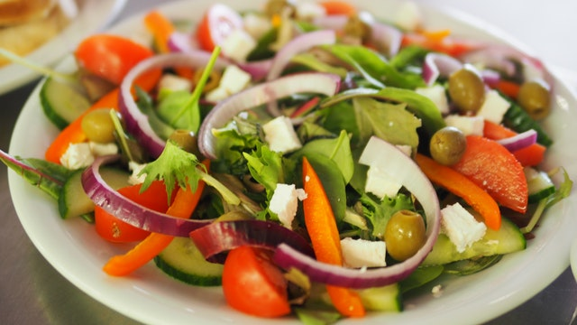

Nate's Pick of the Week
Happy monday, eaters! This week's theme is 'All About Greek!' Our pick of the week this week is Hedary's, a Mediterranean restaurant in Allen, TX. Set in a quaint house turned into a dining establishment, the atmosphere is cozy, the staff friendly, the prices low, and the food delicious!

Mediterranean food is often overlooked, but is delicious and perfect for a family style meal. Mediterranean style food features lots of fresh veggies and tasty meats. Lamb is a staple of Mediterranean food, as well as kabobs, hummus, falafal, grape leaves, and rice. At most Mediterranean restaurants, there are usually tons of options, so there will be something for everyone, and it's a great choice when going with a group of friends.
Hedary's is family owned, and the family are veterans of the restaurant business. On their website, they feature a whole section that showcases retro black and white photos of them as children in the 70's working in their family's old Lebanese Pizza shop.Prices at Hedary's are not the cheapest we've ever featured, but the portion sizes more than make up for the slightly higher prices. Most plates run between $10-$15 dollars, with some more affordable lunch options. Hedary's is also a BYOB restaurant, with a small uncorking fee, so you won't have the extra cost of drinks at this restaurant.

Eating at Home? Try Something New!
One of the easiest, most delicious greek recipes you can make is Greek salad. It only requires a few ingredients, and you can easily put your own spin on it by adding additional veggies or meat.
Ingredients
- 1 Cucumber
- 2 large tomatoes
- 1 red onion
- 1 leafy green mix - whatever type you prefer
- 1/2 cup of feta cheese
- 1/2 cup of olives
- 1/2 cup of olive oil
- 1/4 cup of red wine vinegar
- 1 teaspoon of salt
- 1 teaspoon of black pepper
- 1 teaspoon of lemon juice
- 1 teaspoon of ground oregano
Combine olive oil, red wine vinegar, salt, pepper, lemon juice, and oregano in a bowl and mix. This will be your salad dressing.
Dice the cucumber, tomatoes, and red onion and combine in a large bowl with your greens. Pour the salad dressing over the salad and toss, coating all the veggies. Add the feta and olives and enjoy!